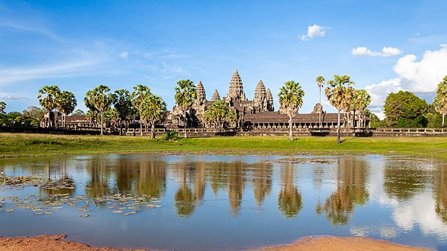

Angkori, qyteti më i madh mesjetar.

Thellë në xhunglën e Kamboxhias shtrihet një qytet mesjetar i fshehur për shekuj me radhë. U desh prilli i vitit 1858 kur eksploruesi francez, Henri Mouhot u nis nga brigjet e Londrës në drejtim të Azisë Jug-lindore, ku për tri vite me radhë eksploroi xhunglën dhe zbuloi një sërë insektesh që edhe sot mbajnë vulën dhe emrin e tij.
Tashmë me hartën e përfituar do të punohet në terren, punë që mund të kërkojë vite, ndoshta edhe dekada që të përfundojë për shkak të terrenit të vështirë dhe zonave të minuara nëpër xhungël, relike të luftës civile kamboxhiane.
Në pjesën më të madhe të shkrimeve të tij ato që paraqiten janë të vërteta, përveç faktit se këta tempuj nuk janë aq të lashtë sa ato të trashëguara nga qytetërimi egjiptian, ai grek apo romak.
Vite më vonë u zbulua se tempujt janë pjesë e qytetit të Angkorit, kryeqendra e perandorisë së Khmerëve nga shekulli i IX deri në shekullin e XV. Në kulmin e lulëzimit të vet ky qytet ka kapur shifrën e 1 milion banorëve duke u bërë me të drejtë qyteti më i madh mesjetar i njerëzimit.